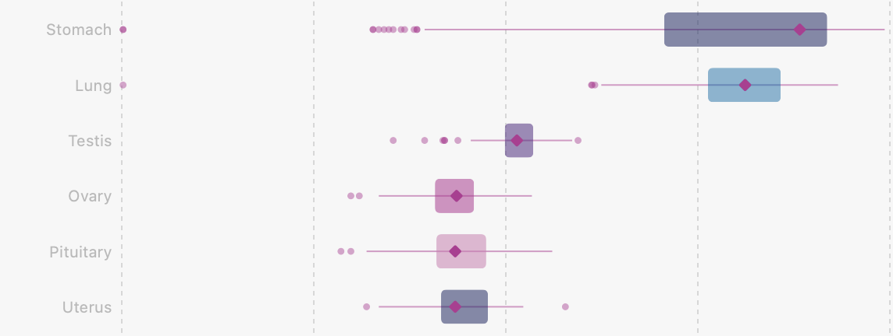
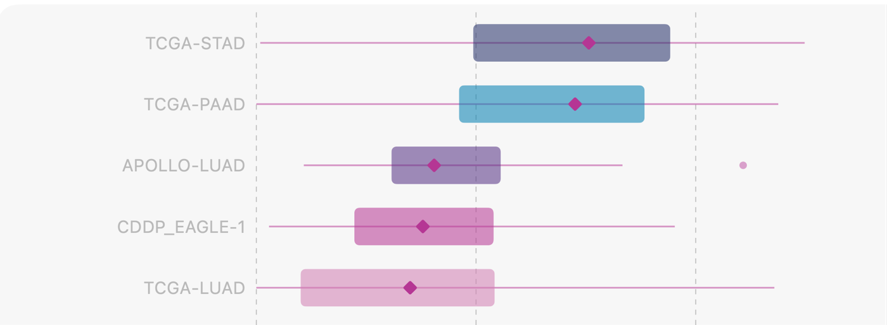
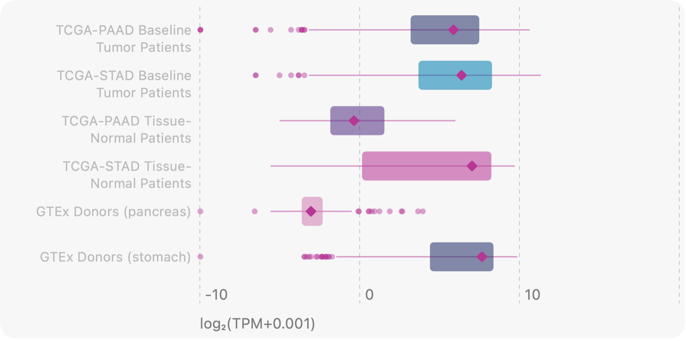
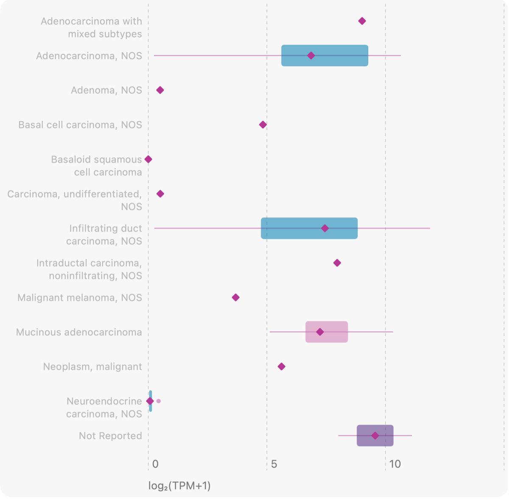
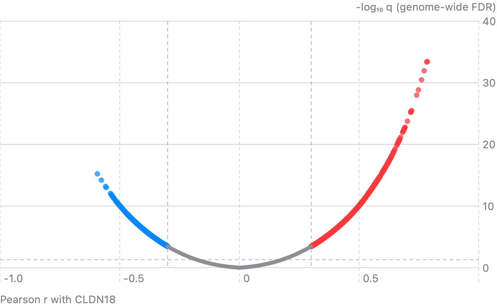
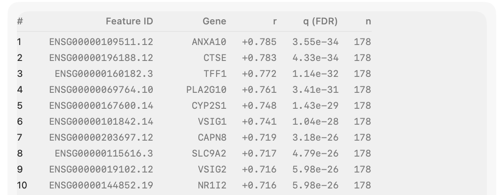
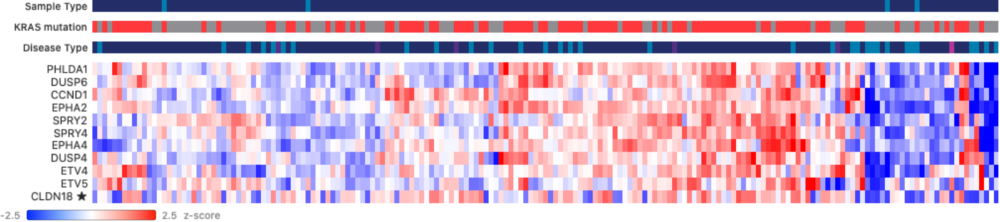
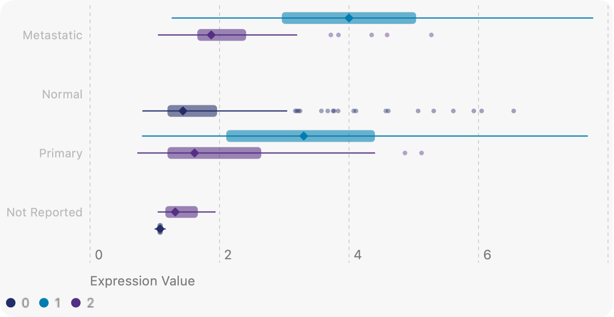
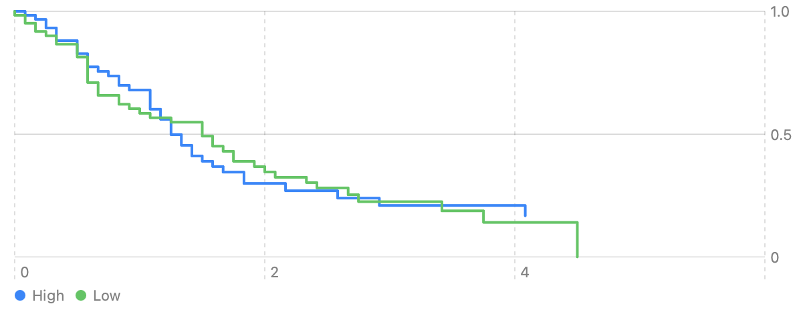
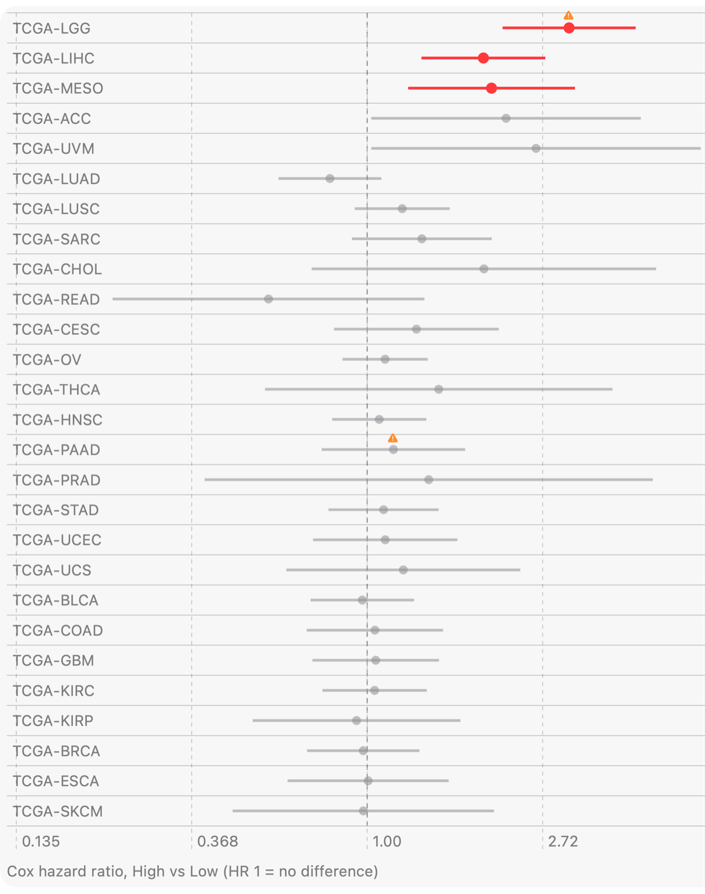

Repurposing CLDN18.2-Targeting Therapeutics in New Indications
Many therapeutic agents are designed with a specific disease in mind: an individual cancer, an autoimmune disease, a neurological condition, or a more routine human ailment. Yet these agents can often be lifted from one disease to another on the strength of shared underlying biology. Many cancers in distinct organ systems share oncogenic driver mutations and pathways that can be targeted more generically (e.g. KRAS mutations, MAPK activation), and some fundamental biological features are open to targeting wherever they appear (e.g. accelerated replication, which sensitizes tumor cells to DNA replication inhibitors).
Other therapies have been enabled by the modern era of transcriptomics and immunology. If a gene expression profile is specific enough to tumor cells compared to normal cells, it can be used to direct the immune system against malignant cells. A notable recent example is the 2024 FDA approval of zolbetuximab for CLDN18.2-positive gastric and gastroesophageal junction adenocarcinoma. Zolbetuximab does not target a cancer driver or an essential pathway in gastric cancer. Instead, it is a monoclonal antibody against CLDN18.2, a specific isoform of claudin 18 that is commonly overexpressed on the surface of gastric cancer cells. By binding tumor-expressed CLDN18.2, zolbetuximab marks those cells for immune attack, primarily through antibody-dependent cellular cytotoxicity and complement-dependent cytotoxicity.
Given this intuitive mechanism of action, we wanted to see whether our new mobile transcriptomics app, GeneFox, could help identify other indications where CLDN18.2 targeting might be worth investigating.
Where is CLDN18 expressed normally?
We began with the expression profile of CLDN18 in normal tissues from the Genotype-Tissue Expression (GTEx) project (Reference › Normal Tissues), to check the known pattern: CLDN18.2 is most highly expressed in normal stomach, and the other major isoform, CLDN18.1, in normal lung. (Worth noting: this means zolbetuximab's targeting in gastric cancer is not inherently tumor-specific.) We saw exactly this pattern. Stomach and lung are the only tissues with meaningful CLDN18 expression under normal conditions.

Which tumors express it?
Next we asked whether other cancers show elevated CLDN18 expression, using data from The Cancer Genome Atlas (TCGA; Reference › Pan-Cancer Atlas). One other indication stood out alongside stomach adenocarcinoma: pancreatic ductal adenocarcinoma (TCGA-PAAD). A separate check found that CLDN18.2 is the dominant isoform in the TCGA pancreatic cancer dataset. Taken together, this suggests pancreatic cancer could be an interesting candidate for zolbetuximab.

Pancreas does not appear among the top tissues for normal CLDN18 expression. So how does GTEx's "true" normal tissue compare with TCGA's tumor-adjacent "normal" tissue and with tumors? We asked exactly this (Reference › Compare Cohorts). CLDN18 expression was much higher in pancreatic tumors than in GTEx normal pancreas, with tumor-adjacent pancreas in between.

Which pancreatic cancers?
Using the clinical metadata that comes with TCGA, we then asked whether particular subsets of pancreatic cancer express more CLDN18 than others (TCGA › TCGA-PAAD › Expression › Expression by Group), and so might be better candidates for zolbetuximab. Several of the common histologies showed high expression, as the overall distribution would lead you to expect. Others showed quite low expression, including the basaloid squamous, undifferentiated and neuroendocrine variants. This suggests that the more typical adenocarcinomas, ductal carcinomas and mucinous carcinomas are the more realistic targets for further investigation.

What travels with CLDN18?
Another convenient GeneFox feature is the ability to quickly relate one gene of interest to the rest of the genome, by correlating it against the other ~19,000 genes (TCGA › TCGA-PAAD › Expression › Top correlates). This helps researchers find strong correlates of their gene and the pathways it may be associated with. Several of the top 100 correlates are known gastric foveolar genes, including TFF1, CTSE, ANXA10 and VSIG1. And nine of the top 39 are Moffitt classical-subtype genes while none are basal, consistent with CLDN18 expression leaning toward the classical subtype.


A link to KRAS signaling?
We then asked whether CLDN18 expression tracks with the best-known driver of pancreatic cancer: KRAS and the MAPK pathway. We plotted the MAPK Pathway Activity Score (MPAS) genes identified by Wagle et al. 2018 alongside CLDN18 (TCGA › TCGA-PAAD › DE & Heatmap › Heatmap). Many of the CLDN18-high samples were also high for the MPAS genes, and many carried known KRAS mutations. This could hint at a combination worth exploring with daraxonrasib, the pan-RAS inhibitor from Revolution Medicines that the FDA approved in August 2026 for previously treated metastatic pancreatic cancer, where it has shown significant benefit for some but not all patients.

Does it hold up in another cohort?
Next we wanted to see whether these results hold in other datasets. TCGA is an outstanding resource, but it is weighted toward primary tumors and earlier-stage disease, while many pancreatic cancer patients are diagnosed only at an advanced stage and much of the disease burden comes from metastatic tumors. Moffitt et al. 2015 (GSE71729) profiled both primary and metastatic samples by microarray and annotated them as classical or basal subtypes. GeneFox can open GEO series like this one directly (GEO › GSE71729 › Expression).
In this cohort, CLDN18 expression looked similar in primary and metastatic samples, which is encouraging for zolbetuximab repurposing. It was much higher in the classical subtype ("1") than in the basal subtype ("2"). Basal samples had values close to those of normal samples, again pointing to classical-subtype pancreatic adenocarcinoma as the indication of interest.

What about survival?
We saw no clear association between CLDN18 expression and survival in pancreatic cancer (TCGA › TCGA-PAAD › Survival). That fits a gene that is tumor-associated but not necessarily a driver of malignancy or morbidity. Stomach adenocarcinoma shows the same thing: higher expression is not associated with survival there either, and across TCGA (Reference › Pan-Cancer Survival) the only associations appear in cancers with low overall CLDN18 expression.
This is an important point. Each of these associations has to be read in the larger context of the disease and the gene. GeneFox helps here by flagging with a warning symbol any result where it cannot reliably estimate a hazard ratio from the underlying data.


Ten minutes, one phone
With GeneFox we worked through this case study in about 10 minutes: a gene target with an FDA-approved therapy, followed into a new candidate indication. You can run the same kind of exploratory analysis on your own genes and indications of interest from the palm of your hand, with no bioinformatics experience required. GeneFox is available now for iOS, macOS and Android from the App Store and Google Play, or at genefox.app/download.
These are exploratory analyses of public data and have not been peer reviewed. Associations are unadjusted and suggest questions to follow up, not conclusions. GeneFox is for research exploration and hypothesis generation. It is not intended for clinical decision making.
References
- GeneFox: genefox.app
- FDA approves zolbetuximab-clzb with chemotherapy for gastric or gastroesophageal junction adenocarcinoma (October 2024): fda.gov
- Genotype-Tissue Expression (GTEx) Portal: gtexportal.org
- NCI Genomic Data Commons (TCGA): portal.gdc.cancer.gov
- Wagle M-C, et al. A transcriptional MAPK Pathway Activity Score (MPAS) is a clinically relevant biomarker in multiple cancer types. npj Precision Oncology 2018: nature.com/articles/s41698-018-0051-4
- FDA approves daraxonrasib for metastatic pancreatic adenocarcinoma (August 2026): fda.gov
- Moffitt RA, et al. Virtual microdissection identifies distinct tumor- and stroma-specific subtypes of pancreatic ductal adenocarcinoma. Nature Genetics 2015: pubmed.ncbi.nlm.nih.gov/26343385
- GSE71729: ncbi.nlm.nih.gov/geo/query/acc.cgi?acc=GSE71729